The Navigate Terms view is designed to display the i2b2 vocabulary concepts that are maintained in the Ontology Management Cell of the i2b2 Hive. These concepts are used in many of the i2b2 views and plug-ins, such as the Query Tool view.
This section describes the layout and contents of this view.
The Navigate Terms view displays the terms listed in the metadata table(s). These terms are grouped (categorized) with other similar items. These groupings are displayed in a hierarchal tree that can be expanded to view all the concepts and modifiers in the associated category.
As stated above, the Navigate Terms view is hierarchical display of the concepts and modifiers in the metadata table(s). The modifiers will always appear with their associated concept.
There are several branches or components of the tree that display.
The highest level is the name of the metadata table that stores the vocabulary. This level cannot be used when creating a query.
A container () has other folders, concepts and / or modifiers. It can be expanded and collapsed by clicking on the plus sign ( ) or minus sign () next to it. It can not be dragged to other views.
) or minus sign () next to it. It can not be dragged to other views.
A modifier container ( ) has other modifier folders and / or modifiers. It can be expanded and collapsed by clicking on the plus sign (
) has other modifier folders and / or modifiers. It can be expanded and collapsed by clicking on the plus sign ( ) or minus sign () next to it. It can not be dragged to other views.
) or minus sign () next to it. It can not be dragged to other views.
A folder ( ) contains other folders, concepts and / or modifiers. It can be expanded and collapsed by clicking on the plus sign (
) contains other folders, concepts and / or modifiers. It can be expanded and collapsed by clicking on the plus sign ( ) or minus sign () next to it. It can also be dragged to other views.
) or minus sign () next to it. It can also be dragged to other views.
A modifier folder ( ) contains other modifier folders and / or modifiers. It can be expanded and collapsed by clicking on the plus sign (
) contains other modifier folders and / or modifiers. It can be expanded and collapsed by clicking on the plus sign ( ) or minus sign () next to it. It can also be dragged to other views.
) or minus sign () next to it. It can also be dragged to other views.
The concept ( ) is the lowest level of the hierarchy and cannot be expanded further.
) is the lowest level of the hierarchy and cannot be expanded further.
The modifier ( ) is the lowest level of the hierarchy and cannot be expanded further.
) is the lowest level of the hierarchy and cannot be expanded further.
Users can expand or collapse a folder by clicking on the plus sign ( ) or negative sign () next to the folder icon.
) or negative sign () next to the folder icon.
) next to the folder in the Navigate Terms view.
Users can define how many concepts to display and whether or not to show hidden terms and/or synonyms. The display options are set in the Navigate Terms Options dialog window, which can be accessed by clicking on the Show Options button ( ).
).
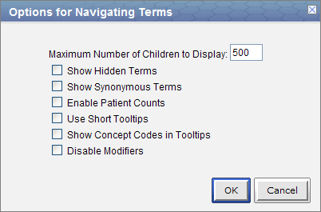
The Maximum number of children to display is used when expanding a folder in the Navigate Terms view. Once the maximum number is reached a message will appear informing you that you have reached the maximum and continuing to retrieve all the concepts in the list may affect performance. You will have the option to continue or to cancel the action.

In the metadata table, an attribute is set to determine whether or not a term is active, inactive or hidden. If an item is marked as hidden it will not appear in the list of terms. Selecting Show Hidden Terms will display those items marked to be hidden. For easy identification, hidden terms will be red when displayed in the results list.
Some terms may be flagged in the metadata table as a synonym of another term. Selecting Show Synonymous Terms will display both the original term and the synonym in the Find Terms view. For easy identification, synonymous terms will be blue when displayed in the results list.
The Enable patient counts option will display the total number of patients that have an observation fact entered for that item.
By default, the tooltip that displays when you hover over an item will contain the entire path name and the tooltip that is specific to that item. Enabling the Use short tooltips option will only display the tooltip information; the path will not be included.
In addition to showing the tooltip, this option will also display the concept_cd associated to the item.
The ability to search for modifiers will not be available if the Disable modifiers option is checked off.
This section describes how to use a group of concepts, a single concept, and a modifier.
Individual as well as groups of concepts can be dragged and dropped (copied) from the Navigate Terms view to other views in the i2b2 Web Client.
A folder ( ) and all its concepts (children) can be added to other views by dragging the folder name from Navigate Terms to one of the following views.
) and all its concepts (children) can be added to other views by dragging the folder name from Navigate Terms to one of the following views.
A modifier folder ( ) and all its concepts (children) can be added to other views by dragging the modifier folder name from Navigate Terms to one of the following views.
) and all its concepts (children) can be added to other views by dragging the modifier folder name from Navigate Terms to one of the following views.
A concept ( ) can be added to other views by dragging the name of the concept from Navigate Terms to one of the following views.
) can be added to other views by dragging the name of the concept from Navigate Terms to one of the following views.
A modifier ( ) can be added to other views by dragging the name of the modifier from Navigate Terms to one of the following views.
) can be added to other views by dragging the name of the modifier from Navigate Terms to one of the following views.
A folder, individual concept, or modifier can be added to the query tool view by simply dragging the item from Navigate Terms view and dropping it into one of the panels in the Query Tool view.
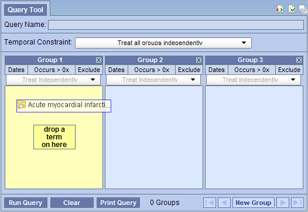
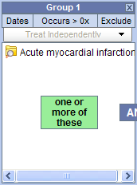
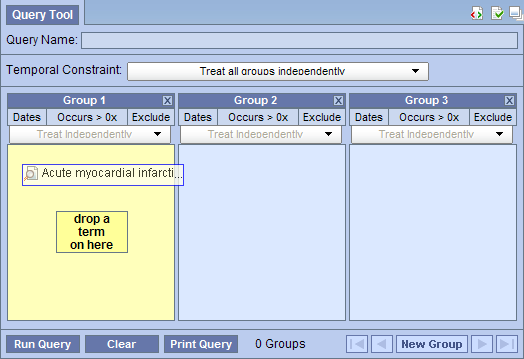
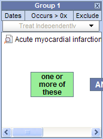


Information in the workplace is related to the most common concepts and queries that an individual uses and in essence becomes their personal workplace.

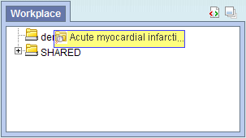
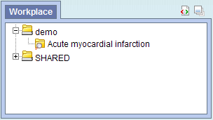
 ) by clicking on the name of the concept.
) by clicking on the name of the concept.
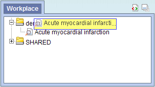
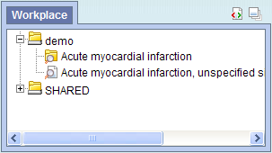
 ) by clicking on the name of the modifier.
) by clicking on the name of the modifier.
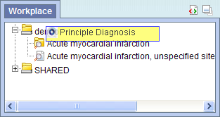
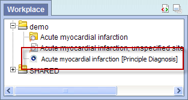